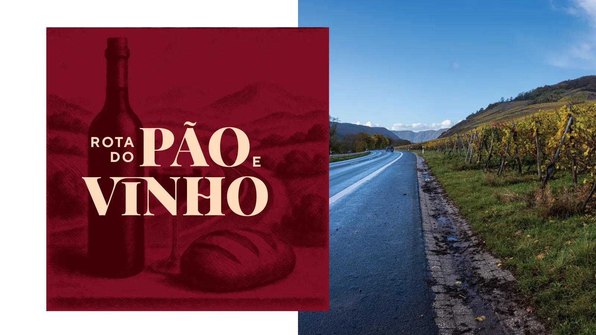
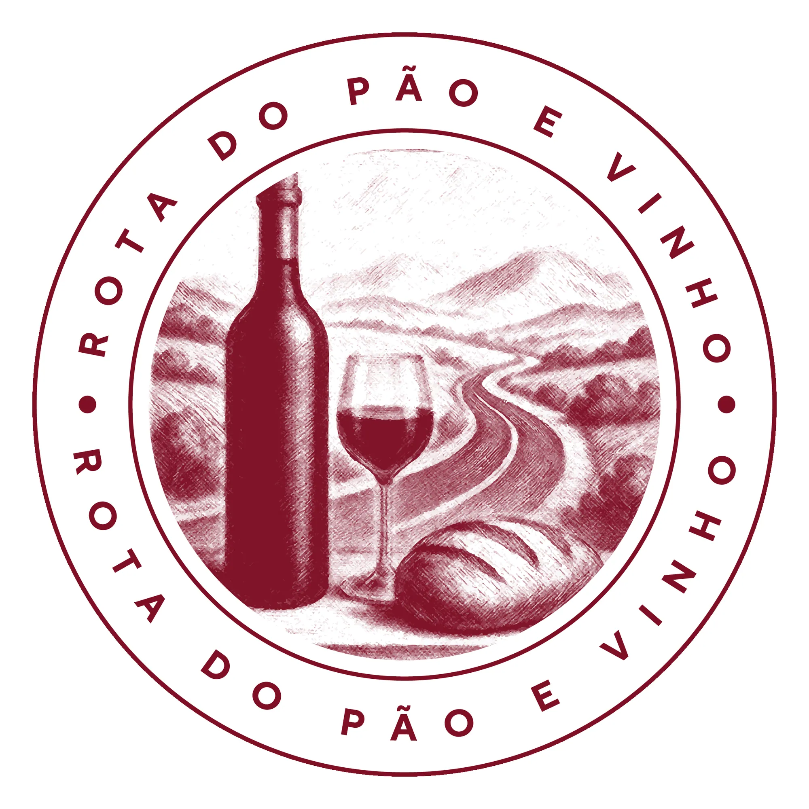
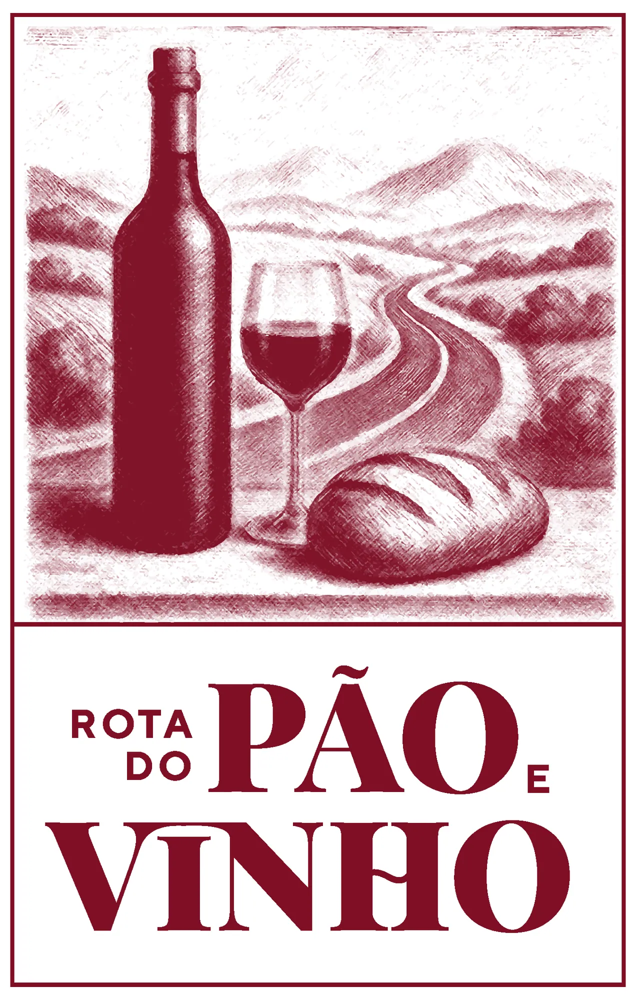
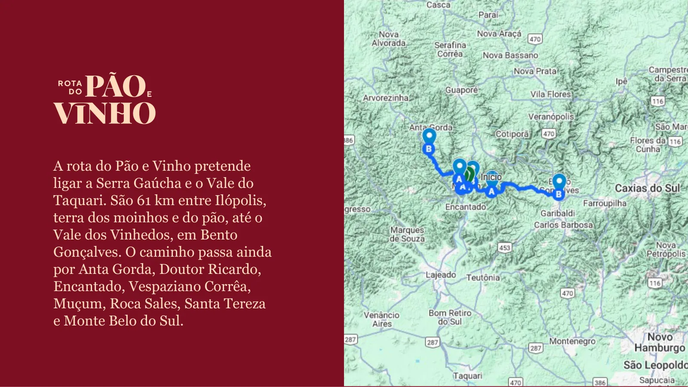
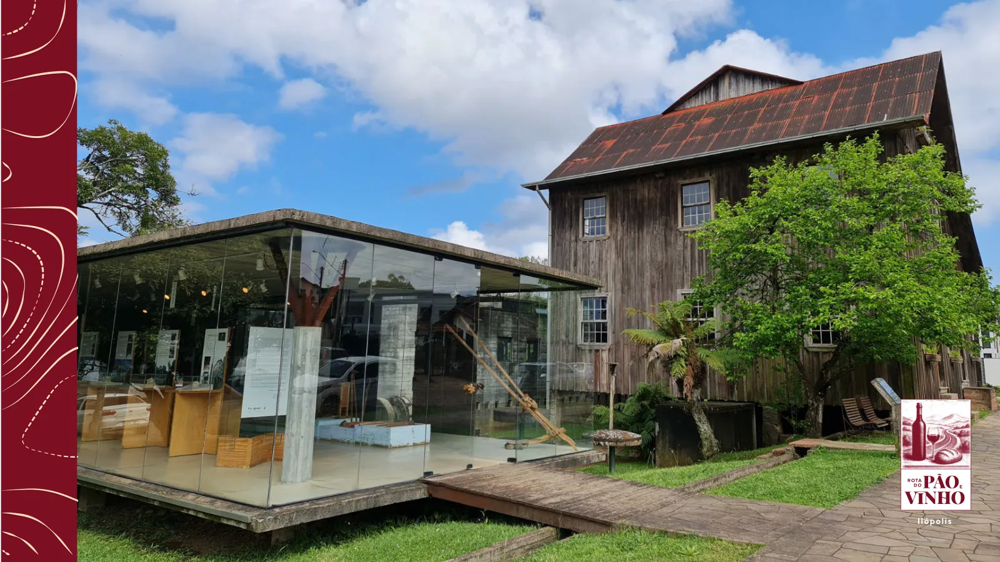
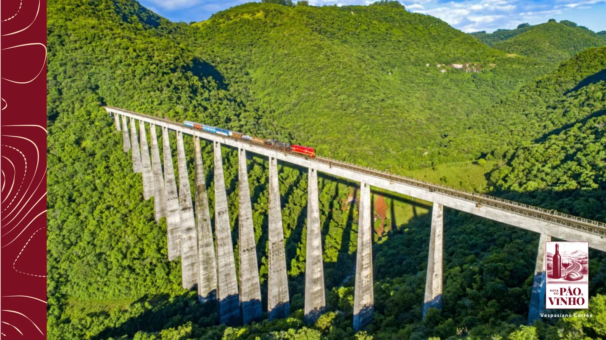
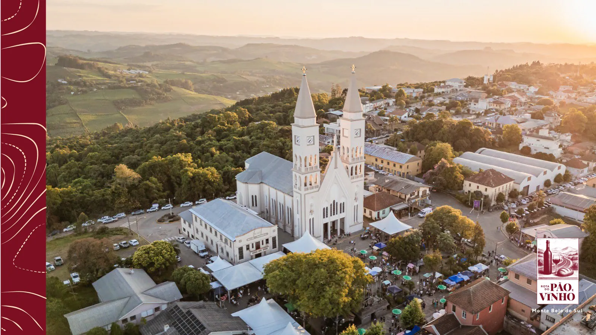
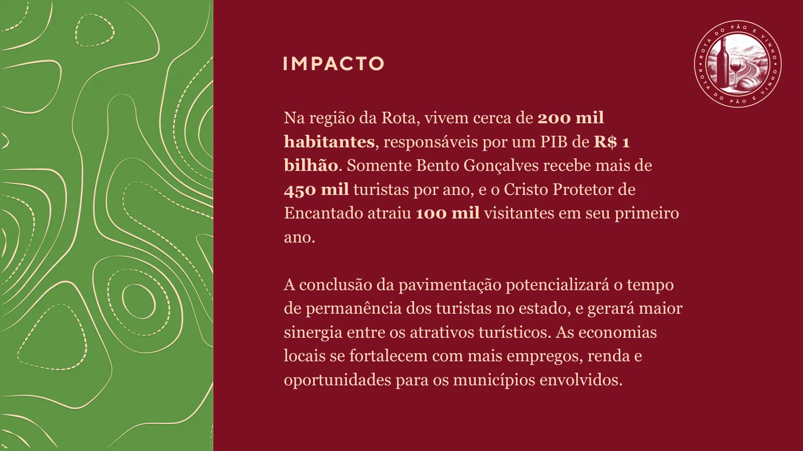
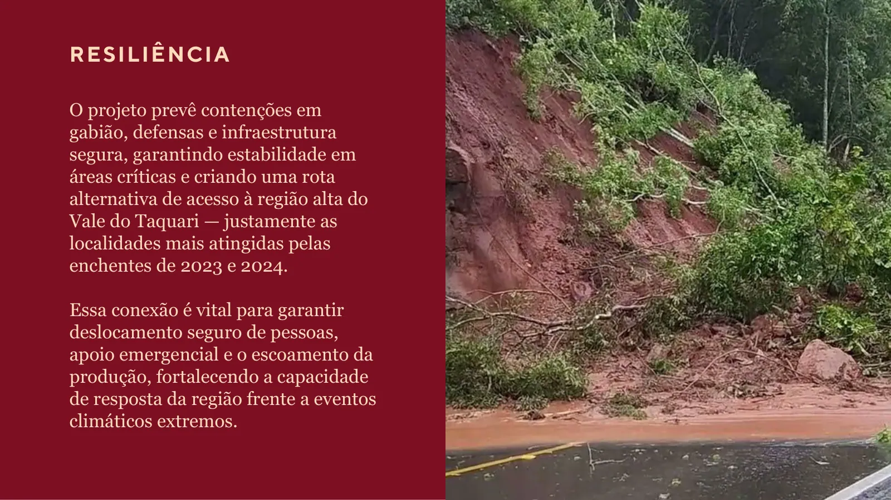
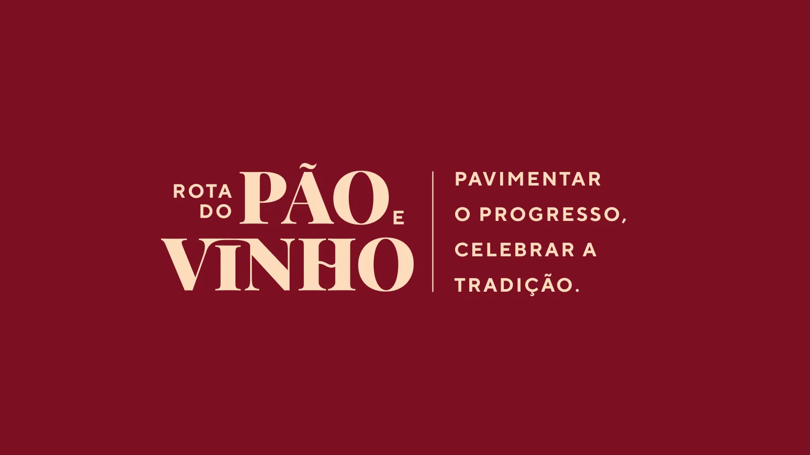

Rota do Pão e Vinho.

Uma estrada que liga o pão da serra ao vinho do vale. A Rota do Pão e Vinho deixou de ser apenas um sonho e ganhou forma, com identidade visual, slogan e um posicionamento à altura da sua importância para a região.
A rota
Cerca de 60 quilômetros conectando Roca Sales, Encantado, Bento Gonçalves, Monte Belo do Sul, Santa Tereza, Muçum, Doutor Ricardo, Anta Gorda, Ilópolis e Vespasiano Corrêa.
A ideia
Um traço de gravura com a garrafa, a taça e o pão diante do caminho que serpenteia entre os morros. As cores vêm do trajeto: o marrom do trigo, o bordô do vinho e o verde da paisagem.
O impacto
Peça-chave do projeto, a apresentação em vídeo foi exibida na reunião que tratou da inclusão dos trechos no Funrigs, fundo do Plano Rio Grande, para a conclusão do asfalto.


Cidade por cidade, o caminho inteiro
A apresentação percorre os municípios da rota e mostra por que a pavimentação importa para turismo, economia e resiliência depois das enchentes.







Pavimentar o progresso, celebrar a tradição.